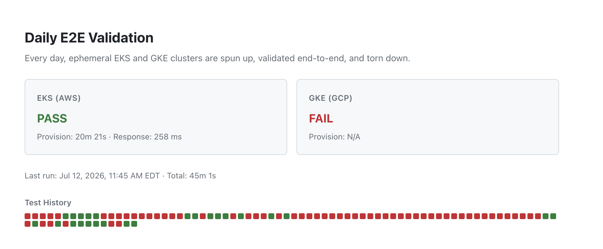
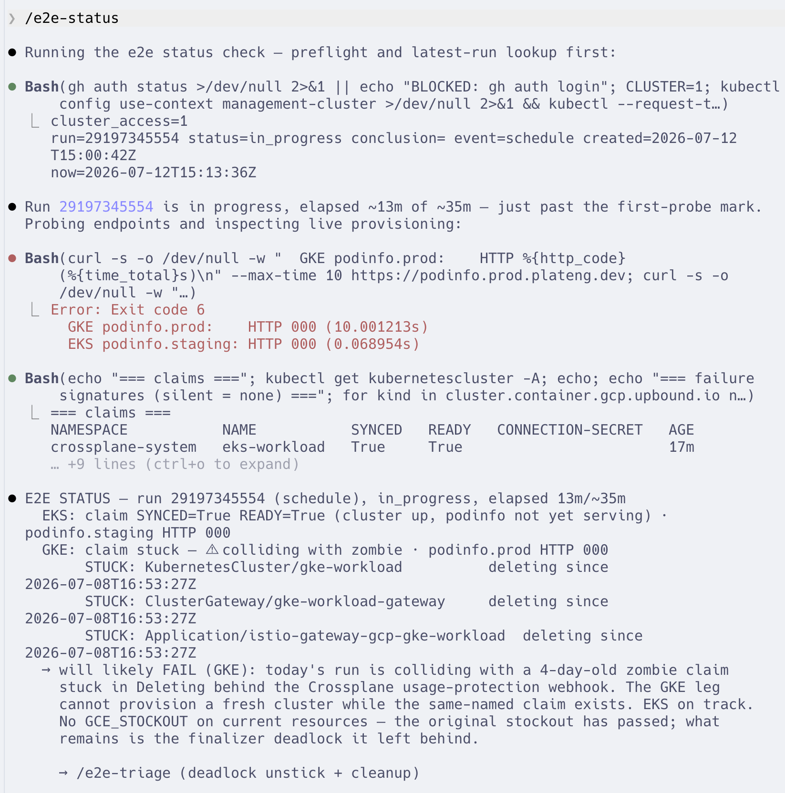
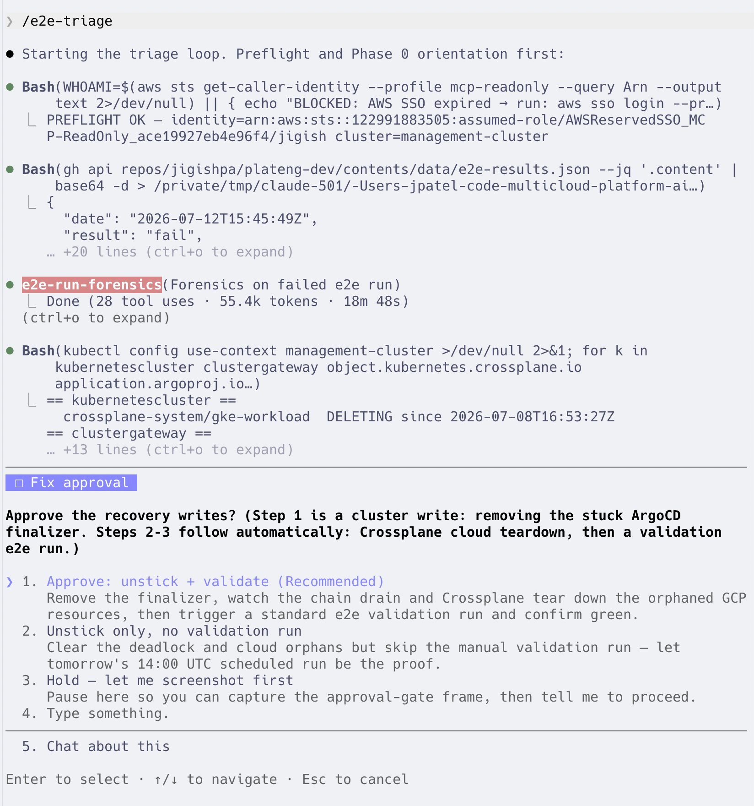
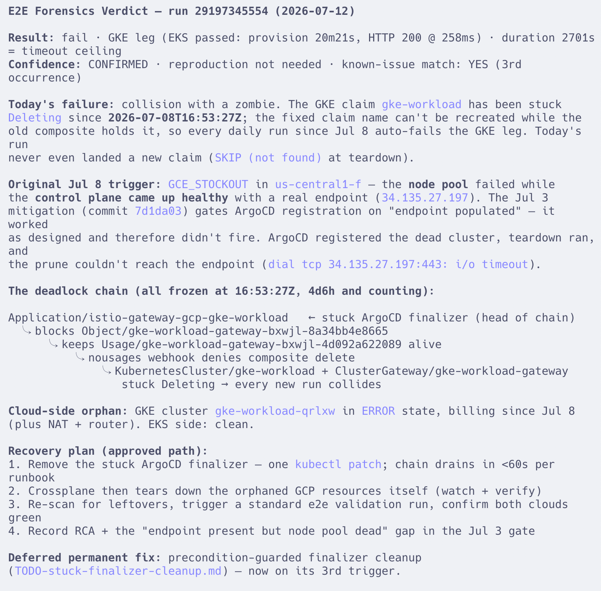
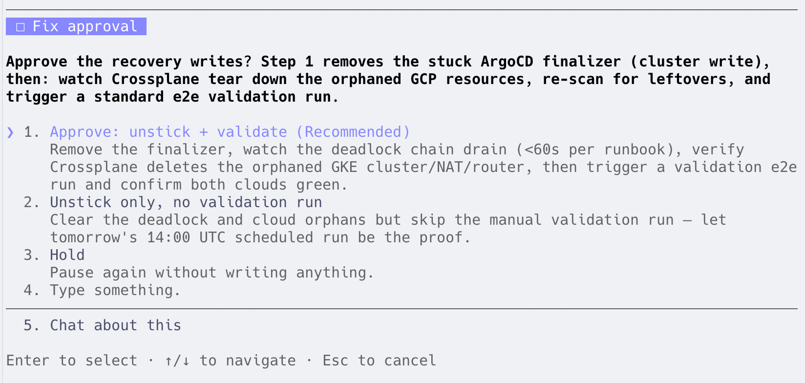
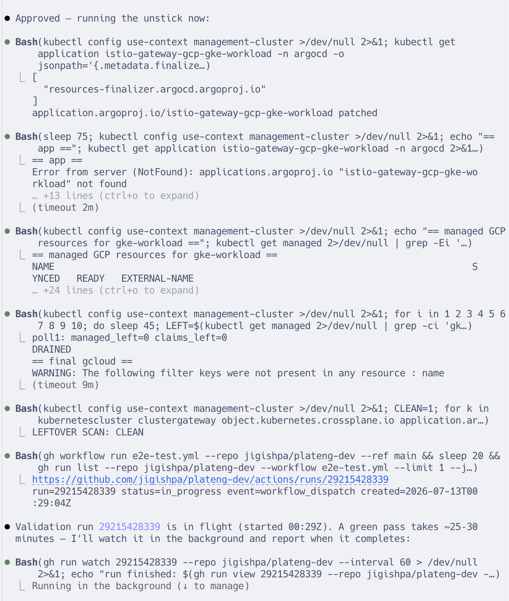
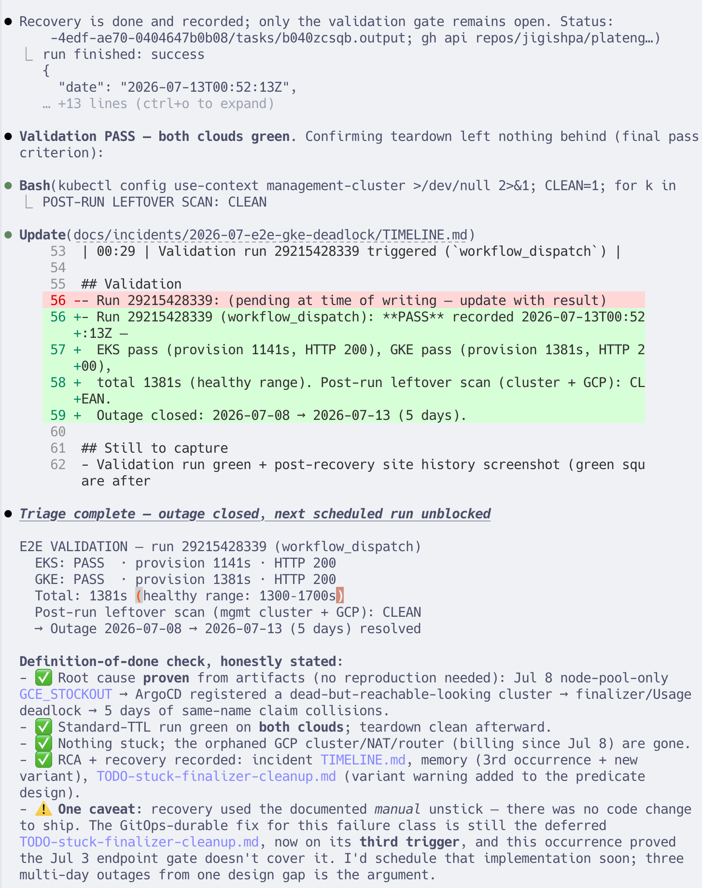
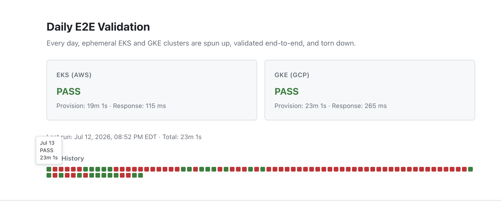

A transient GCP capacity stockout became a self-sustaining multi-day outage. Operator-driven AI agents detected it mid-run, root-caused it from artifacts, and recovered it with a single approved patch.
The trigger was external and transient. The outage was a design gap in teardown.
On July 8, the daily e2e run hit a GCE_STOCKOUT in us-central1-f:
the GKE node pool failed to get capacity while the control plane
came up healthy with a real endpoint. The test timed out and teardown ran —
but ArgoCD's cleanup finalizer couldn't prune resources from a cluster that answers DNS
but has no nodes. The finalizer never released, and a chain of Kubernetes protection
mechanisms froze behind it:
Application/istio-gateway-gcp-gke-workload ← stuck ArgoCD finalizer (head of chain)
↳ blocks Object/gke-workload-gateway-… (provider-kubernetes managed resource)
↳ keeps Usage/gke-workload-gateway-… alive
↳ "nousages" admission webhook denies the composite delete
↳ KubernetesCluster/gke-workload stuck Deleting
↳ every subsequent daily run collides with the zombie claim
The cluster claim uses a fixed name, so the stuck claim blocked every following run:
a one-day capacity blip became five consecutive red days, plus an orphaned GKE cluster
(in ERROR state), NAT gateway, and router billing in GCP the whole time.
Two details made this hard to see. The CI job records results with
if: always(), so GitHub Actions showed green for all five failing
runs — the failure existed only in the results data. And each ephemeral
run destroys its own evidence at teardown, so by the time anyone looked, the
original failure's artifacts were four days gone.
/e2e-statusOne command against the in-flight day-5 run, 13 minutes in.
The status skill probed both endpoints, inspected live provisioning on the management
cluster, and found the collision: three resources stuck Deleting since
July 8, blocking the GKE leg. Verdict at 15:13 UTC: "will likely FAIL (GKE) —
colliding with a 4-day-old zombie claim." The pipeline recorded that failure at
15:45 UTC — 32 minutes later.


/e2e-triageForensics agent → confirmed root cause → operator approval → unstick → validation.
The triage skill delegated log-reading to an isolated forensics agent (28 tool calls
against CI logs, results history, and the live cluster), which returned a
confirmed root cause with no reproduction needed — including why
a mitigation shipped 9 days earlier didn't prevent this: it gated on "endpoint absent,"
and this variant had a healthy endpoint with a dead node pool. The operator approved the
recovery writes at an explicit gate; the fix itself was one kubectl patch
removing the stuck finalizer. The chain drained in ~75 seconds, Crossplane completed the
entire GCP teardown unassisted, and a validation run went green on both clouds.






All times UTC.
| When | Event |
|---|---|
| Jul 8, 16:08 | Daily run provisions GKE; GCE_STOCKOUT fails the node pool while the control plane comes up healthy |
| Jul 8, 16:53 | Teardown deadlocks — ArgoCD finalizer can't prune the unreachable cluster; the whole chain freezes |
| Jul 8–12 | Five daily runs fail the GKE leg by colliding with the zombie claim; GitHub Actions shows green throughout |
| Jul 12, 15:13 | /e2e-status flags the in-flight run: "will likely FAIL (GKE) — colliding with zombie" (32 min before CI records it) |
| Jul 13, 00:05 | /e2e-triage forensics agent returns a confirmed RCA; no reproduction needed |
| Jul 13, 00:20 | Operator approves; one kubectl patch removes the stuck finalizer; chain drains in ~75s |
| Jul 13, 00:25 | Crossplane tears down the orphaned GCP cluster/NAT/router unassisted; leftover scan clean |
| Jul 13, 00:52 | Validation run passes on both clouds (total 23m 1s, healthy range) — outage closed |
What this recovery was — and wasn't.
The agents did the diagnostic work — log forensics, live-cluster inspection, dedupe against known failures. Every consequential write went through an explicit operator approval gate.
This closed the outage with the documented manual unstick; no code change was needed. The durable fix — precondition-guarded finalizer cleanup — is designed and scheduled, and this incident sharpened its spec: "endpoint present but unreachable" must be treated like "endpoint absent."
This failure class first appeared in June and took a multi-day, largely manual diagnosis. This time, with the toolkit: detected mid-run, root-caused from artifacts in minutes, recovered same-session.
Built with AI. Operated with AI. — see AI-Operated Reliability for the toolkit.